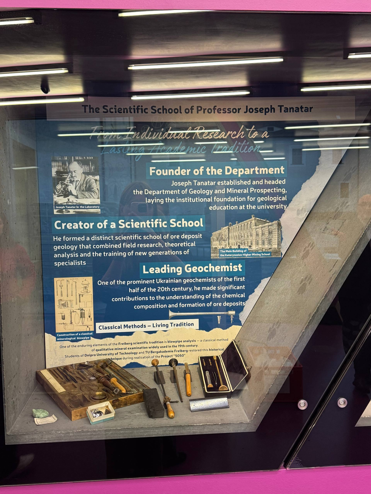

The third stage focuses on the scientific legacy of Professor Joseph Tanatar and the development of geological education and research at Dnipro University of Technology. One of Tanatar's most important achievements was the establishment of the Department of Geology and Mineral Prospecting. This provided an institutional foundation for the development of geological education and scientific research at our university. However, his contribution was not limited to establishing a department. Tanatar created a scientific school specialising in the geology of ore deposits. Its approach combined field research, theoretical analysis, laboratory investigations and the training of new generations of specialists. His work contributed significantly to understanding the chemical composition and formation of mineral deposits and strengthened the development of Ukrainian geochemistry.
An especially interesting element of this exhibition is the connection between historical scientific traditions and contemporary student learning. One example is the classical mineralogical blowpipe method, which was widely used in the nineteenth century for the qualitative examination of minerals. The method involved using a small flame produced by blowing air through a special tube to heat mineral samples and observe their reactions. These observations helped researchers identify certain mineral characteristics. A blowpipe laboratory was established at the mineralogical cabinet of the Katerynoslav Higher Mining School, where Joseph Tanatar conducted practical classes.
As part of Project 5050, students from Dnipro University of Technology and TU Bergakademie Freiberg revisited this historical technique and worked on restoring the classical mineralogical blowpipe method. This activity is particularly valuable because it brings together historical research, practical experimentation and international student collaboration. It also demonstrates that scientific heritage should not remain only in archival documents or historical photographs. It can be rediscovered, examined and incorporated into contemporary educational practice. The main idea of this stage is that scientific traditions remain alive when new generations understand them, work with them and develop them further.
Click on the photograph to enlarge it.